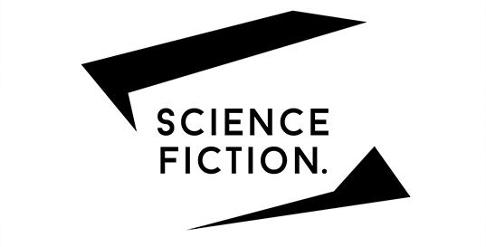

Nouveau numéro web

Le troisième numéro de Webekphrasis au thème de la science fiction est maintenant en ligne! Non-consultable sur tablette et téléphone intelligent.
Journée d'étude
Ekphrasis a participé à la Journée d'étude sur la revue de création en milieu universitaire qui s'est tenue le 20 mai.
Voir l'événementÉditeurs recherchés
Trois postes d'éditeur ou d'éditrice sont ouverts pour le comité lecture de la revue. Envoyez votre demande par courriel
Plus d'informationsPhotos des lancements
Vous pouvez visionner quelques photos des lancements. L'entièreté des images se trouvent sur notre page Facebook.
Voir photosArticle sur Ekphrasis
La revue Ekphrasis fait l'objet d'un article publié sur Boucle Magazine écrit par Michaël Lessard.
Voir l'article